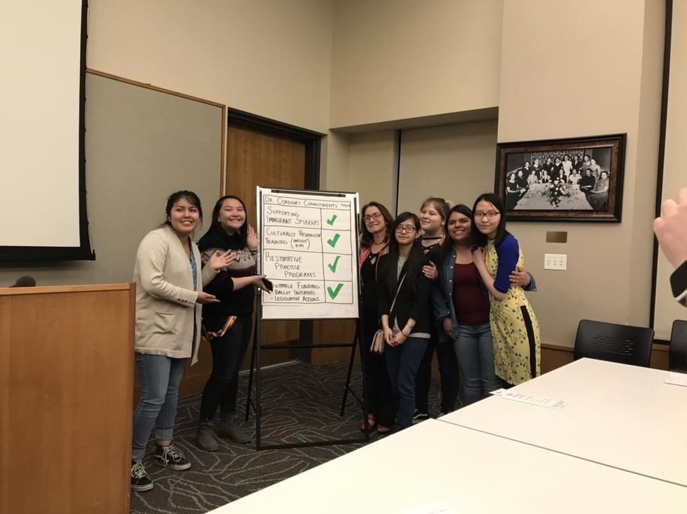
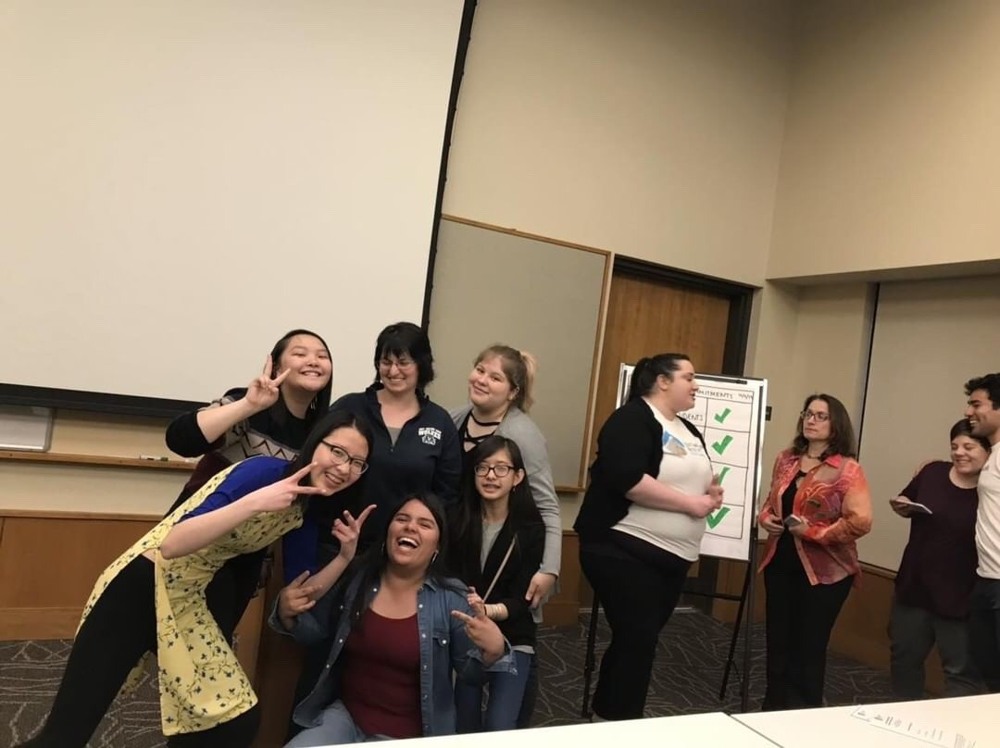

I am in a group called ENUF. We focus on student rights and making sure that everyone is heard because we all have a right to express ourselves especially in a system that is corupt and doesn't care about the people.
I joined this group because I personally believe that student voice is really important.
If we don't have students speaking up about things they believe are right or wrong we will have a tyranny. 


